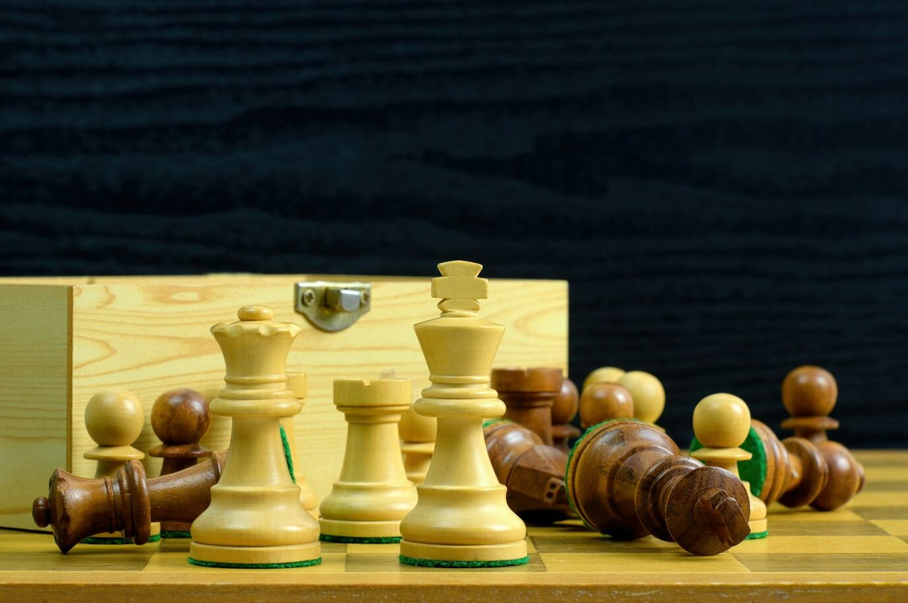

Зрозумій мету
Мат - це шах, від якого немає дозволеного захисту. Саме він завершує партію перемогою, а не взяття короля.
Цей сайт допоможе ознайомитися з основними правилами шахів. Дізнайтеся, як ходять фігури, яка мета гри та з чого почати навчання.

Мат - це шах, від якого немає дозволеного захисту. Саме він завершує партію перемогою, а не взяття короля.
Тура ходить прямо, слон - по діагоналі, кінь - літерою "Г". У кожної фігури свій характер і своє завдання.
Розвивай фігури, контролюй центр і бережи короля. Перед ходом перевіряй, що загрожує твоїм фігурам.